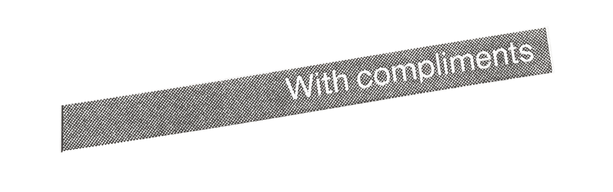
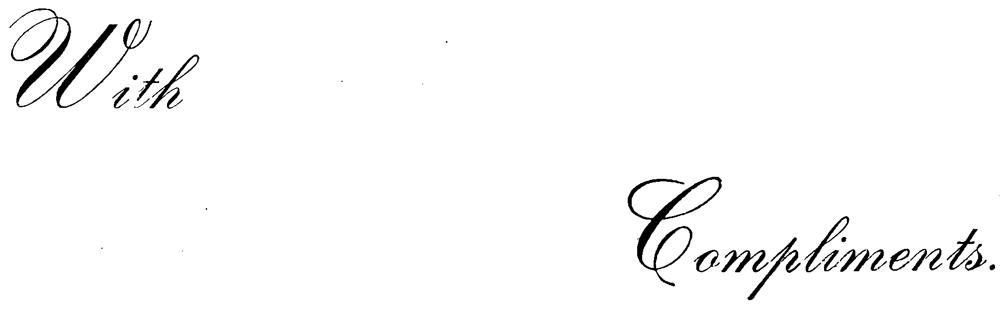

“In response to your questions about alternative spaces, I don’t know that there are any real ones. It seems to me that what is needed is: (1) an alternative economic set-up in which artists are not promoted then exploited by those who may have major investment interests at stake (and this may include not only galleries, but dealers, critics, and the artists themselves as well); (2) an alternative set of aesthetic criteria that makes it impossible to conclude that a piece of art is good on the basis of how famous the artist is or how important a gallery he or she belongs to. These seem to require an alternative social and economic system in general. But I don’t think coop galleries formed for the express purpose of making it easier for more artists to gain entry into that very system which perpetuates the exploitation of artists in general is an alternative; it’s just more of the same.”
Adrian Piper, Studio International (Volume 195 Number 990)

